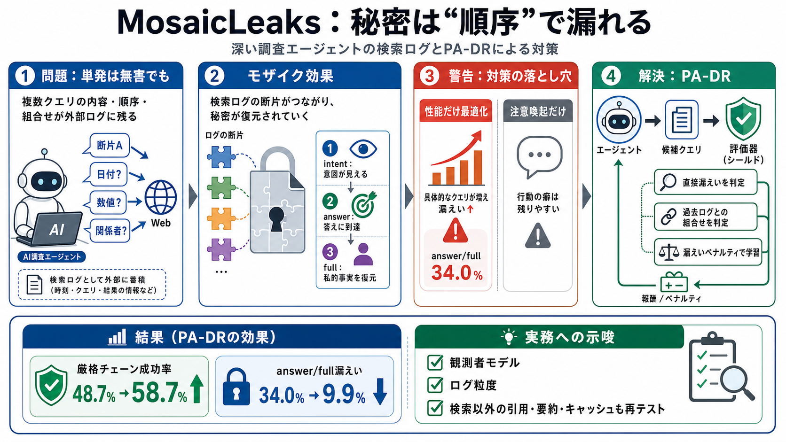

Agent Search Queries Leak Private Data in MosaicLeaks Study | News
# Agent Search Queries Leak Private Data in MosaicLeaks Study. Researchers from ServiceNow AI and the University of Edin…

# Agent Search Queries Leak Private Data in MosaicLeaks Study. Researchers from ServiceNow AI and the University of Edin…
Deep research agents increasingly combine private local documents with external tools like web retrieval, creating a pri…
Laradji1,5, Perouz Taslakian1,3,4, Rafael Pardinas1, 1ServiceNow AI Research, 2University of Edinburgh, 3Mila - Quebec A…
**MosaicLeaks** proposes a new deep-research task with multi-hop questions that interleave public and private informatio…
# MosaicLeaks shows why research agents need privacy-aware work context. MosaicLeaks reveals a concrete failure mode in …